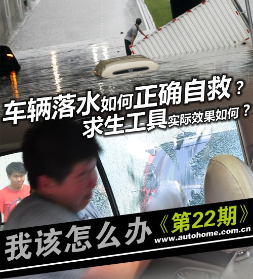
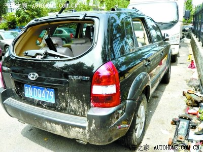
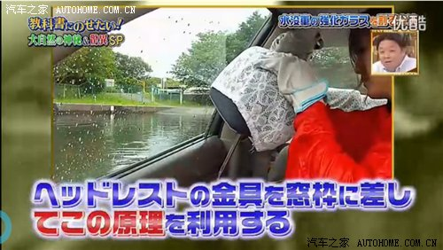
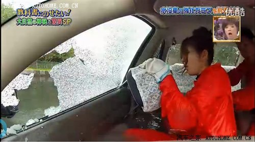
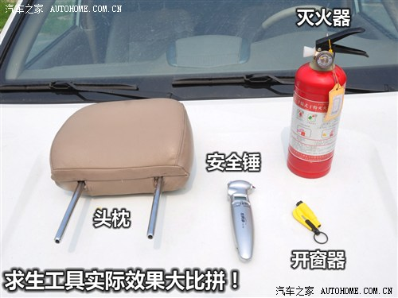
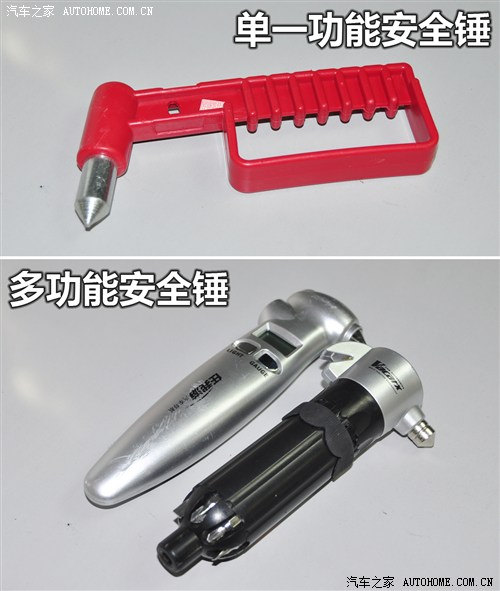

车辆落水如何正确逃生
[汽车之家 用车指南] 2012年7月21日，对于每一个北京人来说注定是一个不平常的日子，61年难得一遇的特大暴雨侵袭北京，不仅考验了北京的排水系统，更大程度上也是对于车主如何应对落水车辆自救的能力的一种考验。从途胜车主惨死车内的事件和网友的留言中可以看出，关于身处落水车辆中如何自救还有很多疑问和需要学习的东西，今天就来教给大家一些相关的知识。

首先我们先来了解一下途胜车主溺死车内事件，7月21日晚，一名驾驶员驾驶一辆途胜行经北京东二环广渠门桥下，因暴雨致立交桥下积水，车辆尝试涉水过程中熄火，驾驶员被困车内，然后打电话给其妻子寻求救援，但随着暴雨持续，桥下积水逐渐上涨，车辆整体淹没，无法打开车门逃生的驾驶员被困车中，最终导致溺水身亡。
『广渠门溺水司机救援全程实拍』
从这个事件中我们有很多疑问，为什么驾驶员在熄火停车时不离开车辆？为什么在水位上涨时还没进行逃生？据当时目击者称由于积水过深，救援人员还没有及时赶到现场，所以围观的群众也无法帮助其逃生，并且驾驶员也进行了自救，尝试破坏车窗或者打开车门进行逃生，但最终都没有成功。

『溺水途胜』
这里就凸显出一个严峻的问题，假如你驾驶车辆落水了，应该如何自救？采取哪些措施是安全、有效的？另外，这里所讲的“落水”和“过水”是两个概念，落水是指你驾驶的车辆掉入或者驶入深水（湖、河、海）后，车辆会下沉以至于完全淹没。而过水就是我们通常情况下遇到的驾驶车辆通过积水路段，水深不超过进气口、不会导致车辆熄火，这样称之为过水。今天我们主要给大家讲解的是如何在落水情况下自救。
下面我们来看看国外介绍落水如何自救的视频：
熟悉美国《探索》频道的朋友都会知道有这么一档节目叫《荒野求生》，主持人贝尔·格里尔斯（Bear Grylls）通过亲身的演示告诉你在各种极端环境下如何逃生。除了在荒野环境下教你如何生存，贝尔还有一档节目叫《日常生存自救手册》，这是模拟在日常生活中会遇到的很多灾难以及事故，如何自救逃生的。有一集就是介绍的当车辆落水后，我们应该如何自救，下面是视频回顾：
看完了上面的视频，下面我们再来看看美国《探索》频道的《流言终结者》系列节目，也有一期就为我们更深入的演示了一次车辆落入水中，如何自救逃生的方法，先来回顾一下视频内容：
重点！★ 看完了两段视频我们得出几条结论：
一、车辆落水后，根据每个车密封情况的不同，下沉的速度也不同，但是一般情况下，最多也就是几分钟。所有的求生措施都要在这几分钟内完成，因此速度是最关键的。
二、当车辆落水后，先不要惊慌失措，第一时间将车窗摇下，尝试车门是否能够打开。如果可以打开车门，就要迅速逃离。
三、如果车门已经无法打开了，那么就要尝试将车窗迅速摇下，手动车窗很好实现，电动车窗在未断电时是可以实现的，如果熄火或者短路的话，电窗就无法摇下了。打开车窗的目的是为了让水进入到车内，使得车内外水压保持一致，车门就可以轻松的打开。如果车门受损或者无法开启，也可以迅速从车窗逃生。
四、如果车窗和车门都没法正常开启或者摇下，那么只有破坏车窗来进行逃生，视频中提到，在车内尽可能的找到一些尖锐物品用力砸车窗，如常备求生工具，比如安全锤等等，建议放置在随手可以够到的地方。我们看到贝尔使用的是头枕，因为很多车型的头枕底端的金属物都是锥形的设计，理论上是可以将车窗打碎的。我们后面也进行了一项测试，来验证几种工具的实际效果展示。但需要特别注意的一点，就是在砸车窗之前一定要系紧安全带，因为在砸完车窗后，水会大量的涌入，人会被巨大的水流冲离逃生出口，因此一定要使用安全带将自己固定在座位上。
五、砸开车窗前，切记一点就是吸足一口气等待水进入到车内，直到车内外的水平面持平后，快速解开安全带，这时车门已经可以打开，迅速逃离车辆。如果车还没有完全沉入水中，车头会沉的比较快，这时驾驶室内还有一部分空间没有浸没，待车内外水平面持平后，开启车门逃生风险比较小。但如果车已经完全没入水中，那么你的时间估计也就不到一分钟，撇足一口气尝试开启车门，如果无法打开车门，立即选择从车窗逃出。在这里我们提示大家，车窗被打破后碎玻璃很有可能割伤身体，所以如果能从车门撤离，首选是车门，如果实在不行，可以尝试车窗。
看完了上面两段视频后，很多朋友都会有疑问，目前市面上不是有很多求生工具么？例如安全锤、破窗器等等，如果这些工具都不具备我们应该选择那些工具进行破坏玻璃呢？下面我们就来看一段日本的视频片段，这里讲述的是女性被困在落水车内后如何选择逃生。


『视频中展示的利用头枕以及杠杆原理撬碎玻璃』
从这段视频中我们可以看到，女性驾驶员被困落水车中，虽然求生工具都很齐全，但是由于女性的力量不足，导致使用求生工具时达不到应有的效果。视频最后，救援人员教给了大家一种新颖的求生方式，就是使用头枕插入车窗与门板之间的缝隙中，然后通过杠杆原理，将玻璃撬碎让水进入到车内。最终车内外水没有压力差，车门也就可以轻松打开了。
● 求生工具实际使用效果大比拼！
结合这两段视频我们得到了几种破坏玻璃的方式，首先是采用求生工具，例如安全锤、开窗器等等，其次就是使用车内的尖锐物品，第三就是使用头枕砸坏玻璃和撬坏玻璃。那么这些方式到底管不管用呢？借着这次机会我们实际的体验里一下这几种破窗方式。由于条件有限我们无法在水中进行模拟实验，但是使用效果水下与水面上相差不大。

实验说明：我们找来了编辑部两辆相同的哈弗，然后一辆是原厂玻璃未贴膜，另外一辆则是原厂玻璃贴浅色隔热膜。求生工具选择了市面上三种安全锤、一种破窗器、车内灭火器、头枕，按照固定位置分别破坏两辆车的玻璃。

三种安全锤只有一种能够成功的砸碎玻璃，另外两种带有多功能的安全锤没有能够砸碎车窗。实验过程中，实验者使用了比较大的力量，砸窗10次左右，才将车窗砸碎，而且砸窗时必须要砸车窗的四角，但很难掌握力道与落点。并且安全锤的使用寿命差不多只有一次，使用过后安全锤的锥面破损严重，基本上无法继续使用了。
|